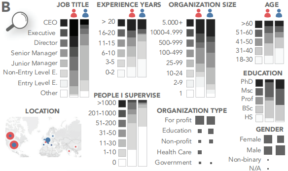
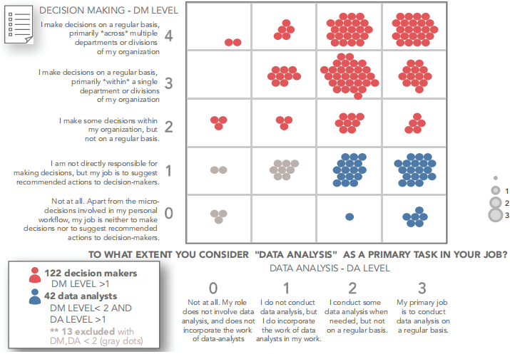
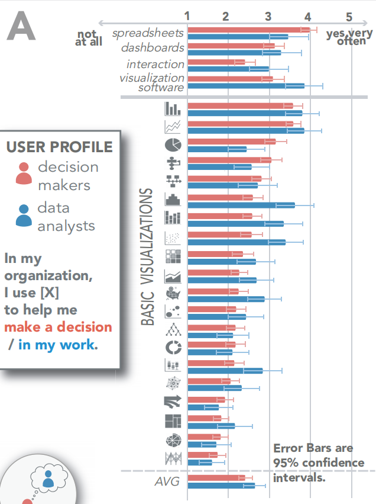
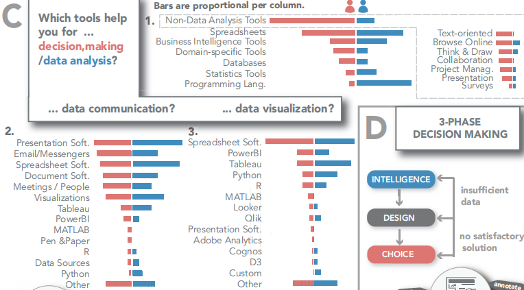
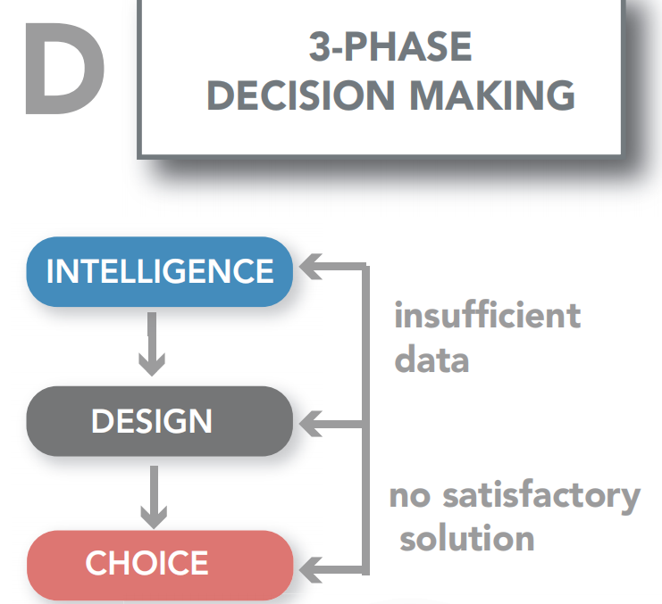

论文：The Unmet Data Visualization Needs of Decision Makers within Organizations
作者：Evanthia Dimara, Harry Zhang, Melanie Tory, Steven Franconeri
发表：TVCG 2021
当一个组织选择一种行动方案时，这个任务通常落在一个决策者身上。决策者依赖于数据分析，将可能不确定或不完整的数据与多目标问题空间中的非形式化知识结合起来，在更广泛的背景和目标下权衡数据分析人员的建议。由于过去大多数可视化分析的研究都集中在理解数据分析人员的需求和挑战上，因此对组织决策者以及相关可视化支持工具知之甚少。文章回顾管理理论中的相关文献，报告一个实证调查和对决策人员的访谈结果，确定了新的可视化工具所面临的挑战和机遇，包括权衡概述、基于场景的分析、询问工具、灵活的数据输入和协作支持。该研究结果强调了将可视化设计从数据分析扩展到信息管理工具的必要性。
背景介绍
过去大多数可视分析的研究都集中在理解数据分析人员的需求和挑战上，因此对组织决策者的任务和挑战知之甚少。
组织决策者面临着诸多挑战：大多数决策指标难以进行量化；可量化的指标具有不确定性——可能依赖于稀疏或不可靠的数据；决策者缺乏对口的专业背景，相关学习成本较高。
本文的研究目标有两点：
- 确定如何将可视化嵌入到组织决策的复杂框架中
- 将可视化设计从数据分析工具扩展到信息管理工具
相关工作
可视化和决策
- 决策学：以决策为研究对象的综合性学科。涉及心理学、经济学、认知科学和管理学等领域，每个学科对决策过程以及如何研究它们都有自己的理解。可视化研究则强调建立一个基于可视化数据的人类决策的统一跨领域理解。
- 可视化工具聚焦于数据分析步骤，而不是决策机制
可视化和组织背景
- 关于可视化在组织环境中的使用的相关研究均选择数据分析师为研究对象
- 数据分析人士将决策者描述为厌恶不确定性的人，他们不使用可视化，除非显示出过于简化的信息和总体趋势，并指出分析和决策的文化可能并不总是在视觉语言上达成一致
组织决策
组织理论领域的关键观点有助于理解在复杂组织背景下的数据决策。
组织中的角色和规则
- 组织是为做出决策而建立的社会系统
- 复杂的决策很容易压倒任何个人的的能力
- 组织理论倾向于关注影响协作决策和行动的社会互动和结构性因素，而不是认知和心理因素
- 由于复杂的多人决策面临着信息丢失、沟通失误、不确定性和摩擦的危险，组织描述了专门的角色、规则和沟通渠道来实现这些复杂的协作
- 水平的劳动分工：子单位根据专门的角色（例如，市场营销、设计、工程或人力资源）来搜索和处理信息
- 分层的劳动分工：更高级的决策者依赖于来自子单元的合成和简化的信息
组织决策者的技能和任务
- 决策者通常依赖于子单元提供的聚合信息和指标
- 组织决策与技术任务的不同之处在于，问题通常具有更大的复杂性和模糊性。因此，更高层次的决策者经常依赖于“直觉”，而不是“明确的客观标准”，并且高度暴露于社会政治因素
- 不同利益相关者之间的内部和外部政治总是会引导决策者的注意力
- 由于决策者和数据分析人员之间的角色、任务和流程有很大的差异，决策者的可视化工具需求可能与帮助数据分析人员处理数据、分析和表示的特性有很大的不同
Survey
为了更全面具体地了解决策者，他们在领英、推特等各大社交媒体发起了一项调查，调查这些在各大组织中和数据打交道的人。参与者填写了职位、级别、监督的人数、工作经验、组织规模和部门（盈利性、政府等）。

根据参与者的工作和决策与数据分析的关系，对参与者进行了分类。矩阵中红色圆点代表决策者，蓝色圆点代表数据分析师。参与者指出了他们在多大程度上认为“决策”是他们工作中的主要任务，矩阵中desion making水平在2-4的人被归类为“决策者”。随后他们又指出了“数据分析”是他们工作中的主要任务的程度，矩阵中data analysis水平在2-3的人被归类为“数据分析师”。为了保证调查的质量，要求提供决策或数据分析相关的明确工作经验。

参与者以开放式的形式报告了他们在任务中使用的工具。用李克特量表调查了他们使用电子表格和各种可视化工具的频率，包括仪表板、交互式和静态可视化、可视化软件和20种类型的基本图表。
调查发现
分析人员倾向于使用直方图、堆叠柱状图、散点图，决策者则倾向于使用流程图、饼图。这反映了决策者和数据分析人员在任务、读写能力甚至对不同类型的代表性信息的兴趣的差异，数据分析寻求理解数据分布和模式，而决策者则强调未来的规划和比例总结
某些图表类型对于组织内的人员角色类型没有体现出明显差异（例如，柱状图和折线图均被大量使用，而树图、雷达图和平行坐标图则均被较少使用）

可视化类型也会受到可用软件的默认值的影响。决策者对电子表格的使用量较高，以及对可视化软件和交互的使用量要少得多。决策者虽然对数据感兴趣，但他们使用的工具不那么复杂。交互性的有限使用也进一步解释了在组织决策的实践中，最终呈现形式以静态数据报告为中心
各种通用工具有助于完成决策任务，主要是非数据分析工具和电子表格。决策者虽然对数据感兴趣，但他们使用的工具不那么复杂。这些工具支持自然语言、绘图、协作和项目管理。它们的广泛采用表明，需要潜在的决策支持工具来与这些软件生态系统有效地集成操作

Interview
为了理解从调查中进一步发现的问题，他们进一步对一些调查参与者进行访谈，以更深入地了解决策者的概况，并为新的可视化工具确定挑战和机遇。这些受访者的职位包括首席执行官、高管、董事、高级和初级经理，国籍包括美国、加拿大，年龄在32岁至66岁之间，组织人数规模在25至5000+之间，组织性质包括商业领域、健康服务、政府部门。
Interview Questions
- 讲述在过去做出的一个困难的决策，如何处理决策的澄清（例如，他们需要的工具、信息）
- 绘制出在问题1的决策中所涉及的信息和心理组织方式
- 确定决策者和数据分析师之间的差异
- 描述自己理想的决策助理（不拘泥于现代技术的限制）
Interview Findings
Decision Makers within Organizations
- 决策者背景除了管理之外，还有CS、法律、经济、航空航天工程
- 在数据分析和可视化方面显得相当博学，甚至他们还要求相关的指导，以便自己进行严格的数据分析
- 时间在日常工作中的优先级很高
- 高层管理人员注重高层观察（即国家政策、制度、一般评估），较低层次的管理人员注重观察具体的任务
How do they make decisions?
重大决策需要综合权衡各团队观点，并非个人单独做出决定
决策通常需要反复迭代产生
可视化的使用主要是为了数据通信或以事后证明决策的合理性，而不是在实际的决策过程中
决策过程经历了三个基本阶段：智能、设计、选择，目前可视化仅用于在智能阶段之前理解一些数据

Decision Makers vs. Data Analysts
需要解释分析结果
- 数据分析师呈现其结果的方式可能会让具有不同背景的决策者和利益相关者感到困惑
- 决策者建议分析人员打破分析结果，分别解释每个因素，并逐步叙述分析结论
需要减少信息
- 信息超载是不同层次的决策者长期存在的问题
- 分析师所呈现的可视化有时过于冗长，存在着不集中或不必要的详细分析以及主要问题无关的图表
需要进行定性分析
很多重要信息可能难以以最合理或结构化的方式跟踪、分析和分发，不能被纯粹地量化（例如公司声誉）
Future Visualization Tools
Flexible Data Interfaces
- Social Actions：在集体决策工作流中同步原始数据集，以增加各团队信任度，减少协作成本
- Input Data Actions：允许对原始数据进行交互（类似Excel），将数据源作为决策过程的一部分进行动态重组
- Mapping & Presentation Actions：映射和展现的方式更加灵活自由，不拘泥于该属性是否被视为数据驱动
- Processing：对严格的数据处理进行指导的必要性
Interrogator Tools
- 可视化工具应该鼓励面向问题的分析，决策者和数据分析人员可以在问题驱动的系统中进行协作
- 为了使决策者能够定义而不是解决问题，可视化工具应该专注于克服不同信息对其任务相关性的模糊之处
- 允许用户自由选择存储、组织和注释定量和定性数据的方法
- 方便迭代扫描、对齐和重新组合不同类型的信息
Scenario-based Simulations
允许用户做场景分析，以结构化的方式展示决策的假设
Trade-off Overviews
帮助用户定义决策标准的重要性，并可视化地将多个属性合并为聚合系数
总结
虽然可视化支持数据分析师和决策者之间的知识转移，但这项工作概述了一个更大的空间，其中可视化可以发挥作用。为了理解数据可视化如何适应组织内决策支持的广泛格局，他们请决策者描述他们在复杂环境中做出决策的方式，以及技术在其工作流中的作用。
研究结果强调，数据可视化需要通过定性的细微差别和信息减少来支持决策，以及对数据分析过程的简明的按需解释。他们进一步确定了新的可视化设计的机会，包括灵活的数据输入和协作机制、询问、基于场景的分析和权衡概述分析的辅助工具。
然而，这篇文章与大多数定性研究一样，不应该被解释为结论性的或得出因果推论的案例，因为是基于自己收集的数据。需要未来的研究来证实这些发现，并将其扩展到更广泛的决策者和场景中。
✉️ zjuvis@cad.zju.edu.cn